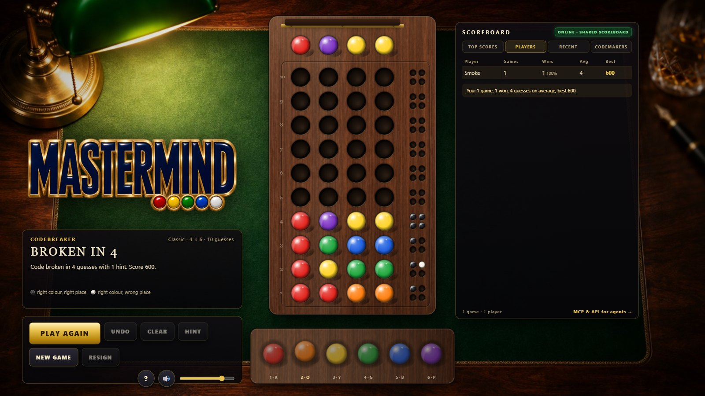
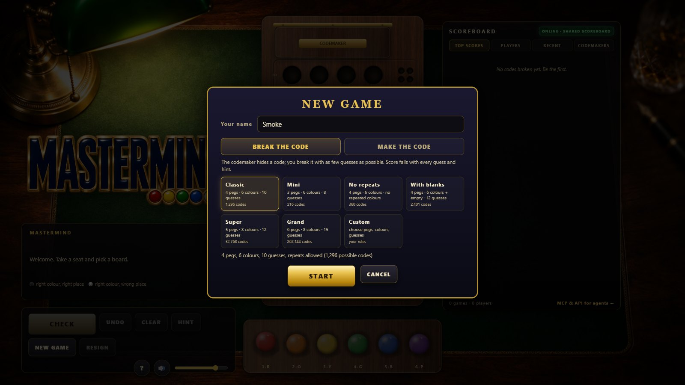
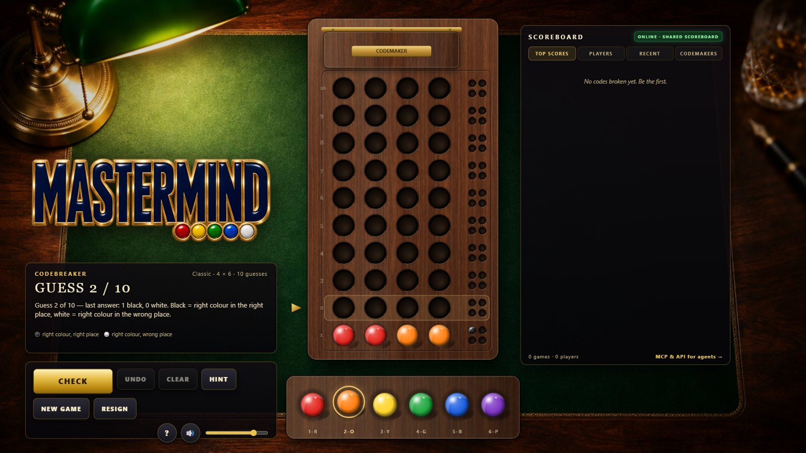
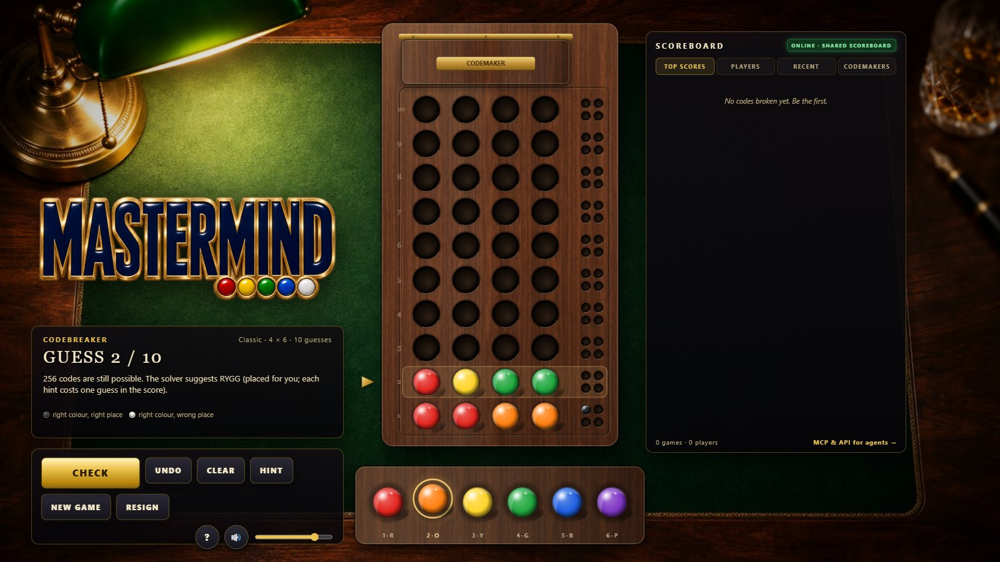
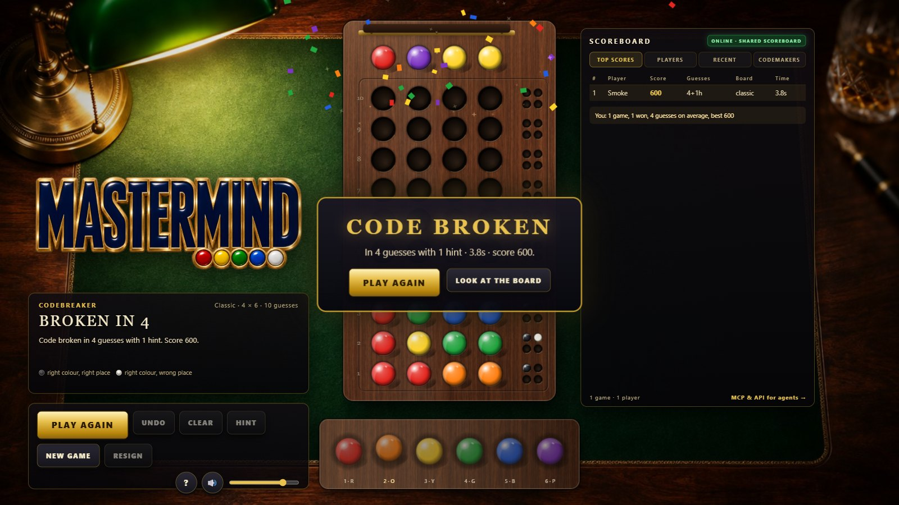
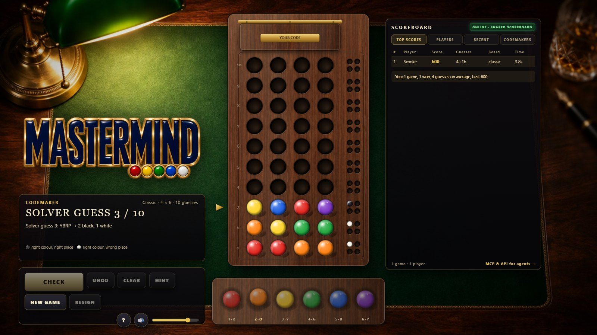
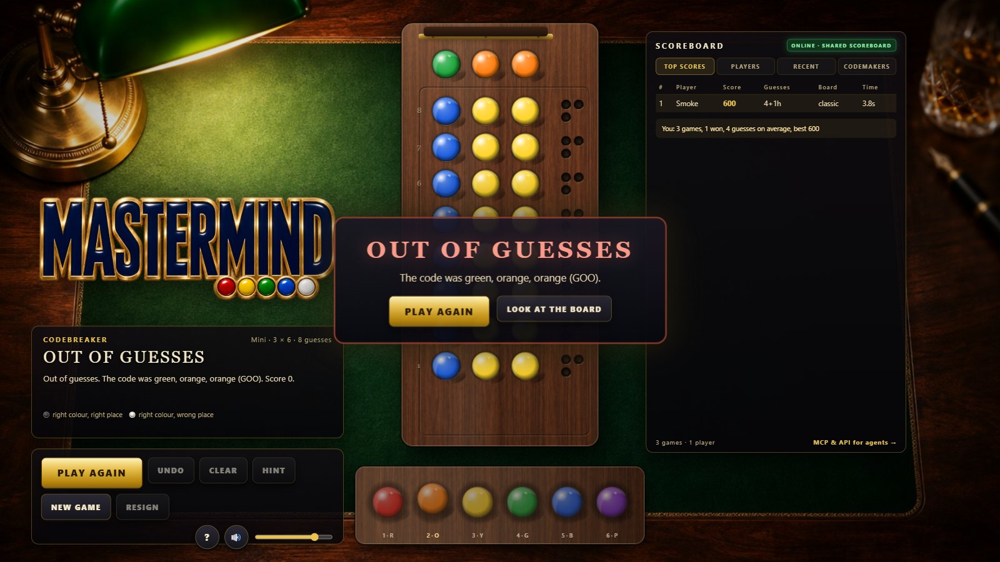

What it is
The classic code-breaking game on a walnut decoding board under a banker's lamp: the codemaker hides a code of coloured pegs behind a hinged shield, you have ten guesses, and every answer comes back as black and white key pegs. Plain HTML5 Canvas, Web Audio and vanilla JavaScript, no frameworks. The same project ships a dependency-free Node server with a REST API and an MCP server, so Claude can sit at the same table and play on the same scoreboard.
Features
Two roles
Break the code, or make one: in codemaker mode you hide a code and the server's Knuth minimax solver breaks it row by row while you watch. Your points are the guesses it needs.
Six boards and custom rules
Classic 4 × 6, Mini, No repeats, With blanks, Super 5 × 8, Grand 6 × 8, or any mix of 2–8 pegs, 2–10 colours, 1–30 guesses, repeats and blanks on or off.
Physical feel
Pegs drop into drilled holes with a bounce, key pegs pop in one by one, the brass marker slides to the next row, and the codemaker's shield swings open on its hinge to reveal the code.
Hints with a price
The solver tells you how many codes are still possible and what it would play next, placed on the board for you. Each hint costs a guess in the score.
Shared scoreboard
Top scores, players, recent games and codemakers, shared by everyone who plays against the server, agents included. Offline it falls back to a local scoreboard in the browser.
Sound
Plastic ticks and wooden knocks for the pegs, clinks for the key pegs, the shield's hinge, fanfares, a quiet study-room ambience with a clock; all synthesized live, nothing streamed.
Let Claude play
The server exposes eight MCP tools over Streamable HTTP (and a stdio bridge): rules, new_game, guess, get_game, list_games, hint, resign and get_scores, with the same operations available as a REST API. Connect from Claude Code, Claude Desktop or claude.ai and ask for a game.
claude mcp add --transport http mastermind https://cocojs.com/games/mastermind/mcp
Or run your own: node server/server.js and point the client at http://localhost:8772/mcp.

Screenshots






Controls
| Action | Mouse | Keyboard |
|---|---|---|
| Choose a colour / fill the next hole | click a peg in the tray | 1–9, 0, ← → |
| Place / move / remove a peg | click a hole · drag a peg · right-click | Backspace undo, Delete clear |
| Check the guess / lock the code | CHECK | Enter |
| Hint · New game · Help · Mute | buttons | H · N · ? · M |
Run it yourself
With Node.js 20+: node server/server.js (or start.cmd on Windows) and open http://localhost:8772/. Without a server the game also runs from any static host with a local scoreboard. The README covers configuration, tests and the headless screenshot tool.